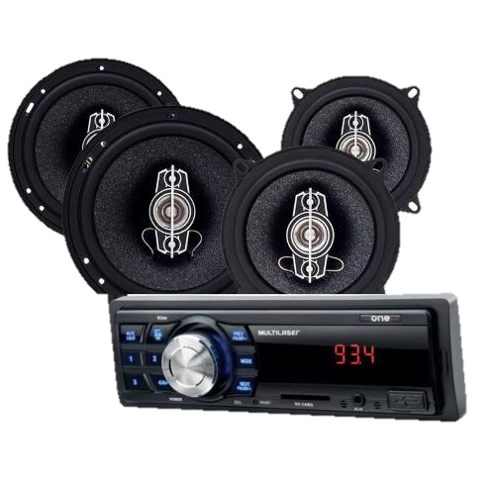
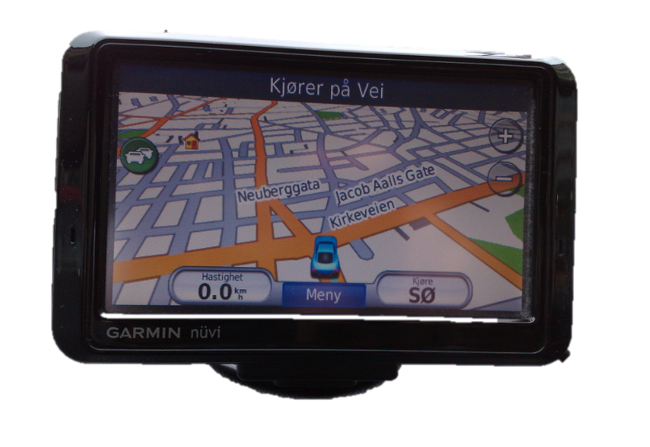
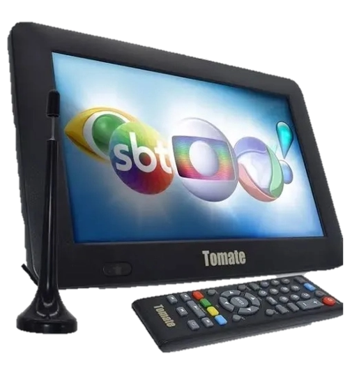

|  |
Mais potência e melhor qualidade Um equalizador de som é a ferramenta que amplifica e atenua certas frequências num sinal de áudio. Graças a esta ferramenta, integrada no seu computador, você obtém a melhor experiência ao ouvir as suas músicas favoritas. O aparelho de som Multilaser P3336P será o seu melhor companheiro para aumentar o volume e desfrutar da estrada. Sempre pronto para você mergulhar na música que você mais gosta e com o melhor som. Torne os seus passeios de carro mais divertidos! |
|  |
NAVEGADOR GPS DEDICADO COM PERCEPÇÃO DO CONDUTOR * Navegador GPS dedicado e fácil de usar com tela de 5" com orientação dupla * Pré-carregado com mapas do Brasil * Alertas para o condutor para maior percepção, incluindo curvas acentuadas futuras, áreas escolares, mudanças de velocidade e muito mais * O recurso Garmin Real Directions™ guia você como se fosse um amigo, usando referências e semáforos * Encontre restaurantes, lojas novas e famosas, e muito mais com o Foursquare® |
|  |
A nova TV digital Full HD FT-TV-HD3 chegou para você confundir o banco do carro com o sofá da sua casa. Com melhor qualidade de imagem e recepção de sinal, sua família não irá perder uma notícia importante ou o final da novela a caminho de casa. Possui saída para telas traseiras e entrada USB que permite reprodução de mídias e atualização remota. Produto com total integração com as interfaces de vídeo Faaftech. Conheça a TV Digital Full HD FT-TV-HD3 e veja o conteúdo como ele deve ser visto. |
KING OF PARTS ATACADO E VAREJO DE PRODUTOS DE AUTO PEÇAS LTDA
CNPJ: 00.000.000/0000-00 | Belo Horizonte-MG
ATENDIMENTO
De segunda a sexta das 8:30 às 12H / 13H às 18H